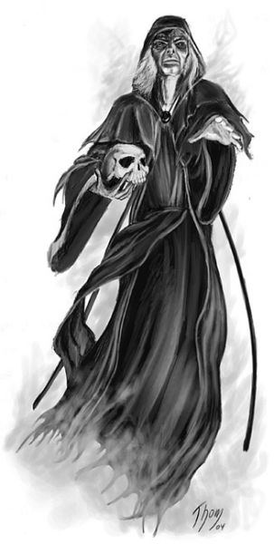
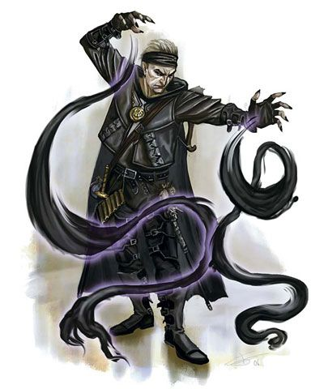
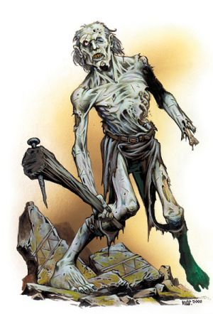

La nécromancie
Résumer l'art de la nécromancie au fait de seulement animer des corps ou parler avec les esprits de personnes mortes depuis longtemps est une erreur. La nécromancie recouvre en réalité une multitude de disciplines, toutes distinctes, mais liées. Un nécromancien accompli est au minimum familier avec toutes et s'efforcera d'obtenir la maîtrise de plusieurs d'entre elles. Mais toutes les questions liées à la mort étant du domaine de ces magiciens, cela les conduit inévitablement à un moment ou un autre à vouloir manipuler les forces de la mort et les morts-vivants, s’attirant alors le rejet de la société dans son ensemble. Leur art est en effet considéré comme une perversion de l'ordre naturel du monde, car la mort est vue comme la fin ultime de toutes choses par la plupart des civilisations, au moins celles du monde Matériel. Qu'un nécromancien utilise ses pouvoirs pour faire apparaître la vie sur un cadavre ou rappeler l'esprit d’une personne décédée est très souvent considéré comme une abomination. Quelles que soient leurs véritables motivations et leurs ambitions, les nécromanciens sont donc considérés comme des êtres mauvais par le commun des mortels, et font fréquemment face à un certain degré de méfiance et de suspicion parmi leurs pairs initiés des arcanes.
Le champ d'application de la nécromancie est donc bien plus large que ce que pensent les gens civilisés, mais si la vérité devait être connue de tous, ses praticiens ne seraient même pas tolérés. De nombreux magiciens touchent à la nécromancie en recherchant des sorts qu’ils jugent utiles, tout en restant ignorants de la véritable source de leur pouvoir. D'autres s’essayent activement à la nécromancie sans jamais toucher à ses grands secrets, que ce soit par ignorance de leur existence ou par raisonnement moralisateur. Très peu l'embrassent complètement au point de délaisser toute autre magie, ce qui rend sa pratique emprise de mystères et explique que peu de secrets de cette tradition passent d’un nécromancien à un autre. Or la redécouverte de ce savoir est un processus long et douloureux, qui expose même quelque fois à de grands dangers.
Énergie négative
Supposer que la nécromancie n’est que l'étude de la mort et de ce qui se cache au-delà est une fausse idée. Principalement, l’art enseigne la manipulation des énergies négatives, un terme à mauvaise connotation. L'énergie négative est pourtant un élément fondamental de la structure de l'univers, aussi naturel que le fait que le soleil se lève le jour et la lune la nuit, même si nombreux sont ceux qui refusent de l'accepter. Il existe des plans d'existence entiers, loin du monde Matériel, composés entièrement d'énergie négative. Ce sont des endroits obscurs au sol composé de matières et d’énergies qui sont la pure antithèse de toute vie, anéantissant tout à son simple contact. Il convient ici de souligner que cela n’a rien à voir avec les plans des démons et des diables, qui sont eux le berceau du Mal.
Cette énergie négative se retrouve également dans le monde Matériel, mais elle y existe en équilibre avec l'ensemble des éléments et des forces, ce qui la rend par ailleurs aussi nécessaire que toutes les autres pour la survie du monde. Cette énergie négative est la source de pouvoir de tous les nécromanciens, qui essayent donc de l’exploiter et de la contrôler durant leurs recherches. Elle est étroitement liée à la mort, ce qui explique qu’un nécromancien de grande puissance est souvent considéré comme un maître de la mort. Notons que cette énergie n’est généralement pas la cause réelle de la mort d’une créature mortelle, mais qu’elle est inhérente à la transformation entre la vie et la mort. Quand une créature meurt, l'énergie négative s'accumule et se concentre dans un rejet massif vivement ressenti par les personnes ayant une sensibilité pour ces choses-là. Tout ce que la créature n'a jamais été dans sa vie, toutes ses pensées, ses sentiments et son expérience façonnent l'énergie négative qui circule par le biais de son esprit au moment de sa mort, avec dans certains cas de graves répercussions ailleurs dans le monde. Car si l'énergie libérée par la mort d’un simple écureuil n’importe absolument pas à l'humanité, la fin d'un grand héros soutenu par un dieu majeur peut avoir des répercutions sur le monde naturel, le flux d'énergie négative libérée pouvant causer de terribles catastrophes naturelles de l'autre côté de la planète.
Mais ces grands événements sont rares et impossibles à prédire avec précision. L'art de la nécromancie se concentre donc plutôt sur des sources locales d'énergie négative. Ainsi, si de rares nécromanciens sont aptes à exploiter le grand rush d'énergie négative au moment de la mort d’une créature, la plupart tendent à puiser leur pouvoir dans leur environnement. Car l’énergie négative est présente partout dans le monde, même en petites doses : dans les rochers, les arbres, les créatures. C'est le principe de l'entropie et la raison pour laquelle rien ne vit pour toujours. C’est pour cela que chaque être vivant meurt un peu chaque jour, comme touché et caressé par la force de cette destruction de vie. Un nécromancien va devenir un puissant canalisateur de ces énergies, les faisant se précipiter vers lui pour les concentrer avant de les libérer, de la même manière que cela se passe durant la mort.
On constate donc que la présence de l'énergie négative est naturelle et aussi nécessaire que toutes les autres forces de la nature. Leur manipulation et leur contrôle, par contre, ne l'est pas, et c'est ce qui vaut aux nécromanciens d’être jugés corrompus et mauvais, quelles que soient leurs intentions. Il n’y a en effet qu'un nombre limité de manières de canaliser l'énergie négative, et très peu sont considérées comme des actes bons, voire décents, par les sociétés civilisées. Libérée, l’énergie accumulée par un praticien peut lui procurer une puissance énorme, le rendant capable de provoquer une peur irraisonnable chez ses ennemis et de les vider de toute essence de vie. À l’opposé, il sera tout à fait incapable de stimuler la croissance d'une fleur ou de nourrir des affamés par son art. En contrôlant l'énergie négative, un nécromancien flirte avec de sombres et dangereuses puissances.
Le prix à payer
Certaines magies sont beaucoup plus difficiles à maîtriser que d'autres, et leur utilisation abusive peut détruire non seulement le lanceur de sorts, mais aussi les terres ou les peuples qui l'entourent. Ces disciplines ont rapidement acquis la réputation d’être des arts noirs et sombres. Les deux plus connues sont la démonologie et la nécromancie, bien que d’autres domaines moins puissants comme la sorcellerie soient perçus de la même façon par le novice. La grande majorité des sorts de nécromancie sont pourtant sûrs s'ils sont lancés par un magicien ou un ensorceleur accompli. Les sorts qui puisent dans les énergies négatives du monde ont été découverts il y a fort longtemps, et sont donc maintenant relativement bien connus. Pratiquement n’importe quel magicien peut faire appel à la puissance d’un contact glacial ou d’un rayon affaiblissant, et la plupart des soi-disant nécromanciens se limitent à ces sorts, afin de ne pas trop flirter avec les énergies négatives. Un petit nombre, cependant, plongent pleinement dans ce domaine, quel qu'en soit le coût. Ce sont eux les véritables maîtres de la nécromancie.
En canalisant l'énergie négative pour la concentrer en son sein, un magicien éprouve littéralement les mêmes sensations qu’un homme en train de mourir. Ceux qui le voient penseront également qu’il est en train de mourir, les énergies négatives étant rassemblées pour emmener son esprit loin du monde Matériel. Car si les pratiques les plus connues incluent des protections qui protègent un magicien des ravages de l'énergie négative, ce n’est pas le cas lors des recherches en nécromancie par exemple. Lorsque les énergies négatives sont appelées à être utilisées lors de sombres expérimentations, le magicien sent passer par son corps un souffle qui semble vouloir lui ôter la vie. Il commence à sentir ses défenses magiques s’éroder en même temps que son esprit s’affaiblit. L'énergie négative et la matière vivante ne peuvent pas exister en même temps car elles sont contraires. C'est un gouffre que tout nécromancien doit combler chaque fois qu'il utilise ses mystérieux talents.
Une exposition prolongée aux matières premières de l’énergie négative sans les protections appropriées met en danger le nécromancien, car l'effet de ces énergies sur un être vivant peut être douloureux à supporter. Un organisme peut être littéralement vidé de sa force vive, le faisant se tordre dans les plus atroces souffrances. Des griffes ou des serres peuvent sortir à la place de ses mains, ou son visage s'enfoncer sur lui-même, ne laissant qu’un crâne recouvert de peau sèche. Ces énergies ont aussi la force de briser les esprits, exposant le magicien aux plus horribles des cauchemars. Finalement, la pratique continue de la manipulation des énergies négatives ne tuera pas le praticien, son esprit suffisamment puissant et sa connaissance de la nécromancie le protégeant d’une issue fatale. Au lieu de cela, celui-ci va progressivement devenir une créature morte-vivante, sorte d’immortalité qui est, disons le franchement, exactement ce que certains nécromanciens recherchent dans leur étude de la nécromancie.
Peu de nécromanciens atteignent toutefois ce stade, car la plupart fuient la pratique dès qu’ils voient l'effet que l'exposition à l'énergie négative provoque en eux. D'autres, moins nombreux, suivent aveuglément cet art, sans se soucier des conséquences, tant que leur esprit n’est pas brisé ou que leur corps n’est pas si affaibli qu'ils ne peuvent plus continuer à exercer cette magie qui a consommé leur vie. Et d'autres, encore plus rares, réussissent à dominer et maîtriser leur art. Ce sont des mages d’une puissance vraiment terrifiante, qui ont commercé leur corps et leur esprit pour devenir mort-vivant, capables de contrôler les forces de l’énergie négative à volonté et avec peu de risque. Reste à savoir si un tel échange est utile et juste…
Les morts-vivants
Lorsque l’on pense à la nécromancie, même à un magicien d’une autre école vient immédiatement à l’esprit des images évoquant une légion de zombis et de squelettes sortant d’un cimetière et sous la domination totale de leur maître maléfique. Comme souvent pour un art obscure, de fausses idées persistent et peu réalisent qu'un nécromancien peut passer l'ensemble de sa carrière sans avoir animé un seul corps ni avoir contrôlé une seule momie, vampire ou spectre. La pratique de la nécromancie tourne autour de la manipulation de l'énergie négative, pas autour de la création de morts-vivants. Les deux sont cependant étroitement liés, et l'animation d’un mort étant relativement facile pour celui qui maîtrise l'énergie négative, peu de nécromanciens ne méritent pas le titre de seigneur de la mort.
Toutes les créatures mortes-vivantes sont, d'une manière ou d'une autre, créées par la manipulation d'énergie négative. Toutefois, toutes ne sont pas intentionnellement créés par des nécromanciens. L'énergie négative, comme nous l'avons vu, est une force naturelle lorsqu'elle se concentre sur un être à sa mort. Mais, dans des circonstances inhabituelles, d’étranges choses peuvent se produire. Selon le cours normal des événements, lorsqu'une créature meurt, l'énergie négative est aspirée et se dissipe alors que le corps refroidi et que l’esprit s’échappe. Cette énergie est cependant une puissante force et, si elle s'attarde ou est piégée par n’importe quel moyen, le corps peut en effet se remettre debout ou l'esprit rester sur le plan matériel. Chargées d'énergie négative et rendues folles par les cauchemars, ces créatures poursuivent alors leur vie uniquement dans le but de se venger. Conscient de cela ou non, le nouveau mort-vivant devient généralement aigri et mauvais, cherchant à mettre un terme à toutes les créatures vivantes. C'est pourquoi le monde est aux prises avec des fantômes, des goules, des nécrophages et beaucoup d'autres créatures créées par des moyens naturels pour mener une guerre sans fin contre les vivants.
Alors que prédire quand un mort-vivant va se relever naturellement est très difficile, même pour celui qui comprend et maîtrise l'énergie négative, il y a certains endroits au monde qui semblent naturellement concentrer l'énergie négative, augmentant les chances qu’un mort-vivant soit créé lorsque une créature y meurt. Certains événements tels de gigantesques batailles ou des scènes de boucheries incroyables recueillent également de plus grandes quantités d’énergie que d’autres. Enfin, un esprit peut lui-même posséder une très forte volonté de rester sur le plan matériel, pour par exemple remplir certains objectifs. Comme on le voit, avec ou sans nécromanciens, les morts-vivants existeront encore longtemps sur le plan matériel.
Les arcanes et le divin
Il est connu que les clercs dévoués à des dieux mauvais ont la capacité de créer et contrôler les morts-vivants. Ce qui est généralement beaucoup moins connu, par contre, est que les pouvoirs d'un clerc alimenté par une puissance divine peuvent facilement dépasser ceux des plus expérimentés des nécromanciens.
Le nécromancien, en revanche, a de nombreuses armes à sa disposition et de nombreux avantages en comparaison à l'utilisation de la magie divine dans son domaine d'expertise. Tout d'abord, il n'est pas redevable à son dieu, et peut toujours agir comme il le veut, sans courir le risque de perdre ses pouvoirs s'il ne parvient pas à respecter tous les préceptes de la foi. Deuxièmement, en plus d'être un maître de l'énergie négative, les nécromanciens ont également tendance à être des magiciens accomplis qui peuvent compléter l’animation de zombis par une boule de feu ou un projectile magique bien placé. Enfin, la manipulation directe de l'énergie négative, qui va bien au-delà du fait de lancer des sorts, peut produire de puissants effets qui peuvent surpasser les forces qu’un dieu accorde à un clerc... à un certain coût pour le magicien, certes.
Bref, un maître de la nécromancie qui a consacré sa vie à l'étude de l'art a finalement peu à craindre des religions qui se tournent vers la création de morts-vivants. La gamme complète de ses pouvoirs s’étend bien au-delà de leur compréhension limitée.
Traduit par blueace